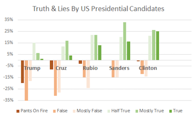

VisLies 2016 Gallery
October 25, 2016
It was another great year of lying, cheating, and deception during this year's Vis Lies. (No, I did not just copy/paste that from last year's web page. Any similarity is purely a coincidence.) We had great attendance this year despite VisLies happening at the same time as a Vis reception with free food and beer. You guys are kind of crazy for picking VisLies over free beer, but we love you for it. Of course, that didn't stop Georges, Bernice, and Ken from delaying the start so we could each grab a beer. (Hey, craziness only goes so far.)
Here is a recap of VisLies this year.
Politicians Lie? No Way!
Georges Grinstein kicked off the meeting with a surprising statistic about our presidential candidates: they lie.
{kind=link}
I know what you are thinking. Come on, there is no way the leaders of our nation would be dishonest or stoop so low as to resort to mistruths to get elected. But here are some statistics Georges presented that incontrovertibly shows that the candidates vying to be President of the United States sometimes are less than honest (some more than others).
I don't know where Georges got these stats, but they must be true if they use such scientific metrics as "Pants On Fire." (Actually, these numbers look like they come from PolitiFact. They use these descriptions as ratings.)
Some Type of Shenanigans
{kind=link}
The great thing about a VisLie is that it transcends all languages. Georges Grinstein recently came across this rather strange infographic featured in a Spanish-language financial magazine. The English translation of the title is "Financial Slips" or "Financial Shenanigans." The description below that translates to "The government's plan for the next few years is to absorb the increase in pension and debt spending, with lower investment in capital spending. This decision could hit growth." Does this visualization support this description?
Well, the green ribbon represents the increase in pension and retirement spending, which is indeed projected to get larger. Likewise the orange line represents capitol spending, which is projected to get smaller, perhaps in part to offset the cost. But what about the last statement: "This decision could hit growth." Is that statement justified by the data? There is no measure of growth represented here. If there is justification for this conclusion, it is not represented in this visualization.
{kind=link}
But if we look closer, we notice something strange going on. First, we observe that although the horizontal axis is labeled by year, there is no labeling of the vertical axis. Looking closer, we see that in fact that there is no consistent axis whatsoever. You can see in this zoomed section of the left axis that the labels on the bars go from 2.9 to 1.9 to 5.9. Wha? As we look elsewhere in the graphic we see that everything is inconsistent along the vertical axis. The scales are off as well as the positions.
{kind=link}
{kind=link}
So do the data at all support any assertions made? The description in the graphic clearly implies that the predicted drop in capitol is to cover the rise in pension and retirement cost. Below is a simpler graph of the same data using a consistent horizontal axis.
We see here that the predicted drop in capitol is huge compared to the rise of pension expenses during the same time period. Thus, from the data provided here, it is an extreme stretch to infer that pension costs are the major cause for a drop in capitol.
Fun with Sports Bras
A common error with designing information graphics is the use of odd shapes in place of bars when depicting relative sizes. Although we humans are pretty good at judging the relative length of objects (when they have consistent width), we get easily confused when stretching an area in multiple directions. Unfortunately, graphic designers like to violate this principle by filling interesting shapes to grab attention.
{kind=link}
Georges Grinstein found a rather odd form of of this vis lie that was used by Nike to report on the effectiveness on web features in selling sportswear. Rather than just show a simple bar chart, this graphic fills in women's sports tops and bottoms. It's hard enough to judge the relative sizes from different fills from the same shape. (Consider for example the top left images filled to 93% and 78%. Without the numbers would you have guessed a 15% difference in fill? Me neither.) But things get even worse when you try to compare values from one shape to another. In particular, the taper of the shape of the bottoms makes all their values look smaller than that of the top.
I don't know what is worse about this design: that the shapes thwart the point of the data by making it look like the numbers shrink from 2013 to 2014 when in fact they increase or that the image is suggestive of incontinence.
Infant Mortality
Ken Moreland found the following infographic, which was originally posted by Sherri Tenpenny in multiple Health Impact News blog. In summary, the graphic shows the U.S. is the nation that injects the most vaccines in newborns and also has the highest infant mortality rate, with the obvious implication that vaccines may be causing adverse health effects in babies.
{kind=link}
After we get over the faulty logic of assuming correlation shows causality (no link between greater vaccinations and greater infant mortality has ever been found), we find something a bit odd about the statement of U.S. infant mortality. Is the U.S. really at the bottom of all countries? Considering the many places in the world with little or no modern health care, that actually seems rather unbelievable.
{kind=link}
It's unbelievable because it's flat wrong. The U.S. is nowhere near the worse country with regard to infant mortality. In fact, we are quite near the top. The graphic cheats by arbitrarily cutting off the list. Although Tenpenny's visualization makes it look like the U.S. has a very high infant mortality rate, it actually says nothing of the sort. All it says is that the U.S. has a higher infant mortality rate than all countries with a smaller infant mortality rate, which is meaningless.
{kind=link}
The anti-vaccination community is not exactly known for truthful visualizations. (We reported on another vaccination lie at last year's vis lies.)
But somehow, the essentially same graphic made it to a source that I would expect would have much higher credentials. The image to the right looks nicer, but it is exactly the same lie. The data are arbitrarily cut off at the U.S. for no reason other than to make it the largest value in the graphic.
Care to guess where this graphic comes from? Anyone?
This graphic in fact comes from IEEE Spectrum. As the publisher of numerous peer reviewed papers, I am rather horrified that this sham of data presentation made it to its most widely distributed journal.
Axis Scales

Lying by adjusting the scales of an axis was a common theme presented by several participants of VisLies this year. Georges Grinstein kicked the theme off with this quite misleading visualization "demonstrating" the failure of the Obama administration in meeting their ACA enrollment goals. Although the difference looks quite large, in fact the numbers are very similar (within 15% of each other). The problem is that the Y-axis does not go all the way to zero. Instead, it is just some arbitrary number slightly less than 6,000,000, which makes the left bar disproportionally small. This graphic that Georges showed is a modification of one originally designed and used by Fox News. It has since been critiqued and ridiculed by many web denizens including this blog by Samantha Wyatt on Media Matters.
{kind=link}
Claire Lauer continued the theme when she showed us a series of bar charts produced by presidential candidate Donald Trump's campaign such as the one shown here. Most of these bar charts, including the one shown here, feature a diminishing bar. As is well described in a recent Washington Post article, the visual implication is that the baseline of the bars is at the bottom of the image, but in fact that baseline is in some arbitrary location. It makes the size of the bars effectively meaningless. Insignificant differences can be made as large as you like.
Interestingly, the use of these floating baselines is so pervasive that Trump's campaign occasionally made bars that visually diminished Trump's lead. It goes to show that the graphic designers often paid little attention to the size of the bars. They just drew bars and wrote numbers in them.
{kind=link}
Poor axis scaling is not always with bar charts, and it is not always intentional. Careless axis scaling makes it easy to lie to yourself. Consider the example presented by Ken Moreland that was generated as part of the work for a technical report. The plot shows the number of blocks generated by an adaptive mesher in a shock physics simulation. As the material in the simulation tends to fragment, it was expected that the number of blocks required to represent them would go up, but the plot shows the number of blocks going down.
It is a curious effect and the authors spent some time hypothesizing why this occurred. However, although it looks like there is a sudden drop, this is less than 0.03% of the total number. This plot was created with an R plotting package that, like most plotting software, chose an axis range based on the minimum and maximum values. This leads to a plot that consists of essentially all noise.
{kind=link}
The corrected plot is shown here. With the Y axis appropriately scaled with a 0 baseline, it is now clearly shown that the variance in the data is insignificant.
This is a cautionary tale to be on the lookout for bad default values from plotting software. It is also a call to plotting software to be more careful about the default scaling.
{kind=link}
The previous examples show mistakes in zooming in on an axis that exaggerate differences and lends credence to noise. But poor axis scaling can also serve to hide important details. Ken Moreland presented this over the top example that was originally comes from a twitter post by National Review.
This plot shows the average global temperature, but look closely at the Y-axis. (You can click on the image to get a larger version.) The axis inexplicably goes from -10°F to 110°F. Is it really necessary to include temperature ranges that feature a completely frozen surface to boiling oceans? We'd all be dead well before then. Instead, it only serves to zoom out the data to hide significant changes.
Twitter viewers were quick to catch on to this trick to hide data that do not agree with the point they are trying to make, and there were several humorous responses on twitter demonstrating that. Below are three examples that "show" how federal debt, mass shooting, and world population are not growing problems after all.
{kind=link}
{kind=link}
{kind=link}
{kind=link}
The previous examples examples distort data by adjusting an axis to a range larger or smaller than it should be. But another way to lie is to simply fabricate a nonsensical axis. This is probably most common in advertisements, which are not typically held to the same standards. Ken Moreland showed this example ad for Geico insurance.
Putting aside the bizarre decision to make bar charts out of cheese (what does cheese have to do with auto insurance?) take a look at the axis used to scale the height of the cheese-bars. Having high customer satisfaction and always available agents are certainly good qualities, but not something easily quantified on an axis. But what is so special about being established in 1936? Is that necessarily better than starting in 1926 or 1966? And why is being the 2nd-largest better than "the other guy." Is being the 2nd-largest somehow better than both the 1st-largest and 3rd-largest?
{kind=link}
Apparently cheese is not enough. Geico soon followed up their advertisement with this similar one featuring popcorn and the exact same nonsensical axis. Perhaps the best part of this image is that Geico has doubled down on the VisLie by coupling this nonsensical axis with a comparison of area. The well known problem with using area to represent values is that, unlike length, people do not interpret the difference in areas linearly. The combination of the nonsensical axis (making the difference look larger) and the use of area (making the difference look smaller) somewhat cancel each other out.
Unsupported Conclusions
Claire Lauer has observed numerous times popular media using visualization to draw conclusions that are not supported by the data or the visualization, but the general public is inclined to believe data visualizations and will hence go along with conclusions drawn in the text even if they are not supported. In demonstration of this, Claire presented a recent Huffington Post article titled "The State Of Drug Use In America, In 9 Maps" that contains several egregious examples of drawing poor conclusions from visualizations.
As the title suggests, the article presents 9 geovisualizations of the United States that depict various measures of different kinds of drug use. The article starts of OK with the first 3 maps depicting a drop in cigarette smoking, a drop in general alcohol consumption, and a rise in wine consumption (although the drop in general alcohol consumption seems fairly minor and hard to ascertain with the visualization.
{kind=link}
Things go bad quickly in the fourth map, which is shown here. This map is shown with the statement "Many more people use marijuana in the Northeast and along the West Coast than in other parts of the country." Ignoring for a fact that a marijuana leaf icon is a pretty poor way to represent the data and the size of the icons seems to serve no purpose other than confuse us, we can observe that the graphic and underlying data in no way support the statement that assertion of where consumption is highest. There are certainly hotspots in the Northeast and West Coast, but there are also equally high regions in other parts of the West, Southwest and Midwest. For that matter, the assertion that "Many more people use marijuana in the Northeast and along the West Coast" is contrary to the assertion in the title of the infographic, "More people smoke where weed is legal," which includes Colorado and leaves out the Northeast and most of the West coast. This titular assertion is also unsupported by the data. Not only does it also ignore many regions of high use, the data were taken before marijuana was legalized in either Colorado or Washington, and therefore cannot support that conclusion.
{kind=link}
The fifth map, depicting a rise in deaths from drugs rather than alcohol is reasonable well supported, but the sixth map once again fails to support the conclusions of the paper. The image shown here comes with the description "Map shows the drug most commonly cited in drug treatment admissions in each state." The map is coupled with the conclusion "A large part of the problem has been the rise of [use] of painkillers and heroin, especially in the Northeast." This conclusion is completely unsupported by the data. First of all, the data show a single snapshot in time. Regardless of whether the values are large or small, there is no way to evaluate if the values have been rising. For all we know, they may have been falling. Second, these data do not show the use of drugs. They show drug treatment admissions. Drug admissions may be affected by drug use, but are also affected by numerous other factors like number of facilities, funding levels, and social support. Third, even ignoring the other problems, the encoding of the data only show which category is highest with no indication of how high levels are. A maximum of heroin could simply be because all other levels are low.
{kind=link}
The following seventh map seems to contradict the conclusions of the sixth map. This map shows the number of deaths, per capita, across the U.S., and we can see that, contrary to what was previously stated, the highest concentration of deaths in not in the Northeast. There are many concentrations where the previous map supposedly showed (but clearly didn't show) a lower heroin/opioid use.
{kind=link}
The eighth map makes equally bad assertions. The image here is coupled with the conclusion "The Midwest has the worst meth problem, especially in rural areas with limited job opportunities." Once again we are looking at one metric in the visualization, in this case meth laboratory incidents, and asserting that it is the same thing as another measurement, in this case meth use. These may be highly correlated, but they might not be and they are certainly not the same thing. Additionally, the statement asserts that the meth problem is worst in rural areas. Hmm. It looks like Chicago is included as part of the Midwest states with bad meth problems. Chicago is hardly rural. The visualization makes no connection between meth and rural vs. urban or limited vs. plentiful job opportunities.
{kind=link}
The final map for this article, shown here, purportedly shows, "overdose victims are more likely to die in states without 'Good Samaritan' immunity laws to protect those seeking medical help for overdoses." The map at least shows drug death rates an states with the described good Samaritan laws. However, the correlation between the two is not strongly established in the visualization. Although many states in the lower changes do have good Samaritan laws, some states without these laws have low change whereas others with higher rates do have the laws. Ultimately, drug use and overdoses are an extremely complex issue with numerous contributing factors. Trying to simplify these incredibly complex social conditions by associating them with one random factor or another is folly. This entire infographic does just that.
The Son of Rainbow
{kind=link}
Rob Maynard came upon an intersting misuse of color while reading some weather reports on about interesting weather patterns last year. The article describes some exceptionally warm winter weather that the U.S. East coast was undergoing and accompanying it were several maps showing weather metrics. Rob discovered some, uh, interesting use of color in these maps. Take for example this image showing the temperature across the Northeast U.S. Oh, look. They are using rainbow colors. Rainbow colors are a common punching bag at VisLies. They are very commonly used (ohhh, pretty colors), but are well known and being terrible and representing data (see for example reviews by Rogowitz and Treinish, Rheingans, Borland and Taylor, or Moreland). But to make matters worse, note that there is no direct indication of what temperature each color is supposed to represent. Fortunately, there is some indication by numbers drawn in the image, so perhaps we could try to reconstruct the color map.
But wait. There is a tiny sliver of a color map at the right of the image. One interesting aspect of this label is that we see that the rainbow colors we expect are actually just a small region of the color map. The reset delves into some rather strange colors, including repitition.
{kind=link}
If we look elsewhere in the article, we see this image of temperatures across all of the U.S. The color legend here is at least visible, but it makes no sense. It has reds in at least two distinct ranges of numbers. Likewise for blue hues in different ranges. The color white appears three times in the color map! In all, the colors are extremely ambiguous, which makes the map nearly impossible to interpret.
To add insult to injury. Take a close look at the numbers associated with the colors on the bar. Starting from 0 and working our way up we see that it is counting by 2s (0, 2, 4, 6, etc.) all the way to 22. Then at 22 it inexplicably jumps to counting by 4s (18, 22, 26, 30, 34, 38, 42). Good luck trainging your brain to follow this bizarre scaing of data. Fortunately, most of the colors are within the linear by-2s scaling range. (Or are they? Aw, heck, I can't tell with these colors.)
{kind=link}
The coup de grâce is this image located at the bottom of the article. It has the same colors as before, but now the scaling is more off. From 0, the counting starts counting by half, and then by 1. Eventually at 14 it starts counting by 2s. The colors are also scaled in such a way that the entire range gets utilized so as to maximize the ambiguity of the colors.